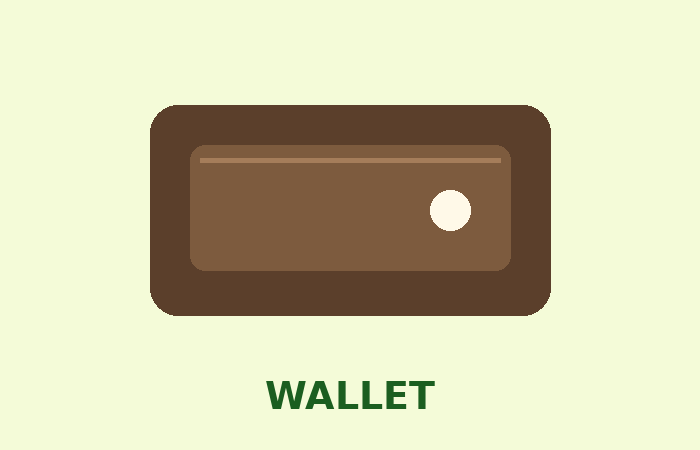

Find &
Recover
With Ease
Experience effortless recovery with our dedicated lost and found service.

How It Works
1. Report
Tell us about your lost or found item.
2. Search
Look through items reported by students.
3. Reunite
Connect with the right person and recover it.